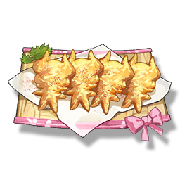

Mie Mie Crisp
Supplies

Increases the defense of all Resonators in the team by 28% for 30 minutes, only effective for the player's Character in multiplayer games.
After many failures, Encore finally made a dish that he was satisfied with. Each piece of crispy meat is made into the shape of a little lamb, and after eating, you will definitely get a dream held by a sheep.
No matter what, you can always eat this dish with confidence.